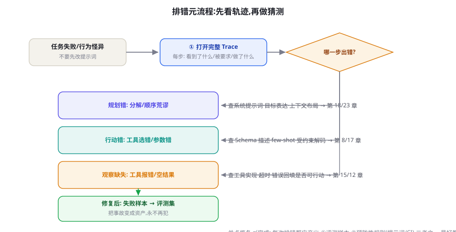

附录 B：常见错误与排错手册
30 个高频故障，按「症状 → 根因 → 修复 → 预防」组织。用法：先在目录找到你正在经历的症状，读「根因」建立理解，再用「修复」止血，最后落实「预防」。本手册假设你已读过第 15 章（Agent Loop）与第 23 章（上下文工程）。
💡 排错的元方法：先看轨迹，再做猜测
Agent 问题的 80% 可以在 trace（调用轨迹） 里直接看出：把每一步的完整消息列表打印或接入 第 79 章的观测工具，问自己三个问题——模型每一步看到了什么？它被要求做什么？它实际做了什么？三者一对照，病灶自动浮现。下面所有条目本质上都是这三问的特例。

一、循环行为类（L1-L7）
| 症状 | 根因与修复 |
|---|---|
| L1 无限重复同一个失败调用 | 根因：错误信息没有帮助——模型看到 error 只会原样重试。修复：错误回填要「可行动」："错误: 日期格式应为 YYYY-MM-DD, 你传了 2024/01/01。请修正后重试"。配合步数上限（第 15 章）。预防：同一工具连续失败 2 次自动升级为「换思路」提示。 |
| L2 模型宣布完成但任务没做完 | 根因：成功标准没有写进上下文，模型以「说完了」代替「做完了」。修复：系统提示词中加入显式完成条件清单；增加一个验证工具 verify()，完成前强制调用。预防：评测集覆盖「半途而废」样本（第 50 章）。 |
| L3 步数用尽前陷入无意义循环 | 根因：上下文太长，早期尝试被稀释，模型「忘了」试过。修复：维护「已尝试方案清单」注入每轮；或用 反思机制在每 N 步强制总结。 |
| L4 循环在两个工具之间来回切换 | 根因：两个工具的输出互相矛盾，模型在两者间震荡（如搜索说 A、数据库说 B）。修复：在提示词中规定证据优先级（「数据库 > 搜索 > 记忆」），并在观察到冲突时要求模型显式声明冲突再决策。 |
| L5 简单任务也跑满步数上限 | 根因：缺少「早停」激励；模型被训练/提示得过于谨慎。修复：系统提示词明确「任务完成即停，不要附加确认步骤」；检查是否把 verify 做成了强制多轮。 |
| L6 工具调用参数幻觉（编造参数值） | 根因：必填信息不在上下文里，模型编一个填上。修复：Schema 里把不确定参数标记 optional 并在 description 写明「未知时先询问用户」；用受约束解码（第 8 章）保证结构，用「缺参必问」规则保证语义。 |
| L7 并行调用结果串扰 | 根因：并行结果按顺序回填时 tool_call_id 对错位。修复：回填严格按 id 配对（第 17 章时序图）；这是框架常见 bug 高发区，自研时写对账单测。 |
二、上下文与记忆类（C1-C7）
| 症状 | 根因与修复 |
|---|---|
| C1 长对话后期「忘记」早期指令 | 根因：lost-in-the-middle——关键约束埋在中段（第 23 章）。修复：关键约束写入系统提示词（每次请求都在）；或每轮在末尾重申目标。预防：用「needle 测试」验证你的上下文布局。 |
| C2 超出上下文窗口直接报错 | 根因：工具大结果无截断地全量入栈。修复：三层策略——结果先落盘、上下文只放摘要+指针；超阈值触发滚动摘要（第 23 章压缩模式）；对超大文件用分页读取工具。 |
| C3 压缩后任务跑偏 | 根因：摘要有损，丢了不可再生的事实（ID、数字、约束）。修复：压缩前先提取「不可丢失清单」结构化保存（第 23 章铁律）；摘要时明确要求保留所有数字与 ID。 |
| C4 多轮后语气/人设漂移 | 根因：人设只在系统提示词，被大量工具结果稀释。修复：关键风格约束用 XML 标签包裹并命名为 <voice>；压缩时人设段落原样保留不参与摘要。 |
| C5 检索回来的内容与问题无关 | 根因：分块破坏语义或查询与文档词汇不匹配（第 20 章）。修复：先做检索评测（召回@K），再依次尝试：调整分块 → 加 BM25 混合 → 查询改写 → 重排序。别一上来就换 embedding 模型。 |
| C6 记忆互相矛盾（新旧偏好打架） | 根因：记忆存储无时间戳与置信度。修复：每条记忆带 updated_at 与来源；检索时新覆盖旧；冲突时显式向用户确认。 |
| C7 多 Agent 交接时信息丢失 | 根因：子任务描述只有一句话，缺少验收标准与上下文（第 24 章）。修复：交接结构化：目标 / 已知事实 / 约束 / 验收标准 / 产物格式五件套。 |
三、输出质量类（Q1-Q7）
| 症状 | 根因与修复 |
|---|---|
| Q1 编造事实/引用（幻觉） | 根因：要求模型输出它不知道的信息，且无外部接地（第 9、63 章）。修复：加检索并要求引用；允许模型说「不确定」；关键结论加第二道核查 Agent。 |
| Q2 JSON 时好时坏解析失败 | 根因：祈祷式解析（第 8 章）。修复：Structured Outputs / 受约束解码；退而求其次用「修复重试」：把解析错误喂回模型修正一次。 |
| Q3 输出格式对但内容答非所问 | 根因：示例（few-shot）主导了语义——模型模仿了格式与 topic，忘了真实问题。修复：示例多样化；在指令中显式「以下示例仅示范格式」。 |
| Q4 过度拒绝（明明无害却拒答） | 根因：安全措辞过强或触发了训练时的敏感模式（第 64 章）。修复：给出合法用途上下文；避免「越狱腔」措辞；必要时拆分任务。 |
| Q5 代码生成「看起来对但跑不通」 | 根因：模型没看到真实环境（依赖版本、目录结构、已有代码）。修复：把关键环境信息（package.json、imports、相关文件）纳入上下文；用执行反馈闭环（第 74 章 TDD 循环）。 |
| Q6 长文输出后半段质量骤降/重复 | 根因：单次生成过长，规划力衰减。修复：先出大纲再分段生成（提示链，第 7 章）；每段带上前文摘要。 |
| Q7 同一问题重跑结果差异巨大 | 根因：temperature 过高或采样路径敏感。修复：工具/解析类调用 temperature=0；关键决策用 self-consistency 多数投票（第 7 章）。 |
四、工程与集成类（E1-E9）
| 症状 | 根因与修复 |
|---|---|
| E1 429/限流风暴 | 根因：无客户端限流，失败重试雪上加霜。修复：令牌桶按 TPM/RPM 配额排队 + 指数退避带抖动（第 12 章代码）。 |
| E2 账单爆炸 | 根因：无单任务预算；上下文随循环线性膨胀。修复：每任务 Token/费用双记账（第 12 章）；大上下文复查压缩；静态内容上 prompt cache。 |
| E3 流式中断/超时 | 根因：网关/代理缓冲了 SSE 或空闲超时过短。修复：关闭代理缓冲、心跳注释帧保活；客户端做好半包合并。 |
| E4 MCP 服务器连不上/工具消失 | 根因：stdio 进程环境变量丢失或启动崩溃；远程服务器鉴权过期。修复：看 Server 日志（stderr）；健康检查 + 工具列表断言纳入启动流程（第 36 章）。 |
| E5 沙箱内网络不通 | 根因：出站白名单过严或 DNS 未配置。修复：按需开放域名并记录；代理出站统一审计（第 60 章）。 |
| E6 重跑结果不可复现 | 根因：温度非零 + 模型版本静默升级 + 检索库变化。修复：记录模型版本号与快照；评测固定采样参数与数据版本（第 13 章）。 |
| E7 升级新模型后行为全面劣化 | 根因：提示词对新模型过拟合（措辞依赖）。修复：评测集回归后渐进切换；提示词分层（角色/约束与「哄特定模型」的话术分离）。 |
| E8 并发下共享状态错乱 | 根因：会话状态进程内存储，多副本不一致。修复：状态外置（Postgres/Redis）+ 检查点（第 80 章）；单会话内串行、会话间并行。 |
| E9 PII 泄漏进日志/第三方 | 根因：上下文原文直传外部 API 且全量入日志。修复：出站脱敏层、日志分级与脱敏、留存策略（第 61、65 章）。 |
五、两条诊断流程
流程一：任务失败（最常见）——按顺序问：
- 看 trace：失败发生在哪一步？规划错了 → 查上下文与提示词；行动错了 → 查工具 Schema 与参数；观察缺失 → 查工具实现与回填。
- 把当步完整上下文复制出来，脱离 Agent 单独重放：单独问模型能否做出正确决策？能 → 问题在上下文组装；不能 → 问题在提示词或模型能力。
- 修完后，把这条失败样本加进评测集——这是把事故变成资产的唯一方式。
流程二：性能/成本劣化——先分型：延迟高了（看哪一步变慢：通常是某个工具或长上下文重算）→ 成本高了（看 Token 用量分布：通常是上下文膨胀或循环变长）→ 质量降了（看模型版本与检索库变更记录）。三种劣化的排查顺序都是「先定位到步，再定位到变更」，变更日志（模型版本、提示词 diff、数据更新）往往直接给出答案。
⚠️ 三个「看起来像 Bug 其实是设计」的情形
① 模型反复调用工具前先「自言自语」——这是 ReAct 思考步，不是异常；② 压缩后数字对不上——摘要有损是特性，先补不可丢失清单再压；③ 评测分数忽高忽低——LLM 输出本就有方差，用多次平均与显著性检验（第 13、57 章），别被单次噪声带偏。
本章小结
- 排错元方法：先看轨迹再猜测——「看到了什么 / 被要求做什么 / 实际做了什么」三问定位。
- 30 个故障分四族：循环行为（刹车不足）、上下文记忆（窗口滥用）、输出质量（接地缺失）、工程集成（Demo 直上生产）。
- 每个修复都要沉淀两件事：失败样本进评测集、预防措施进系统提示词或 CI。
延伸自测
- L1（重复失败调用）与 C7（交接丢信息）的修复共同依赖哪一种工程习惯？
- 你的 Agent 最近一次「跑偏」属于哪一条目？按流程一做一次完整归因并记录。
- 为什么「把失败样本加进评测集」被反复强调？用第 13 章的闭环语言重述。
参考文献与延伸阅读
- Anthropic (2025). Effective context engineering for AI agents. anthropic.com/engineering（C1-C4 的机制依据）
- Liu, N. et al. (2023). Lost in the Middle: How Language Models Use Long Contexts. TACL. arXiv:2307.03172
- OpenAI (2025). A practical guide to building agents. openai.com（生产化检查清单）
- 本书 第 79 章（可观测性）与 第 23 章（上下文工程）为本手册的原理篇。